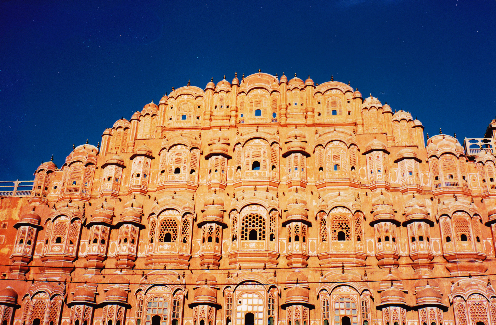
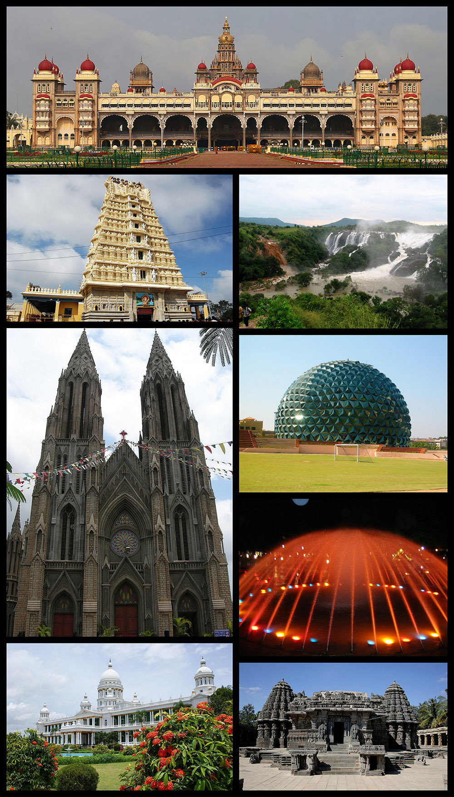
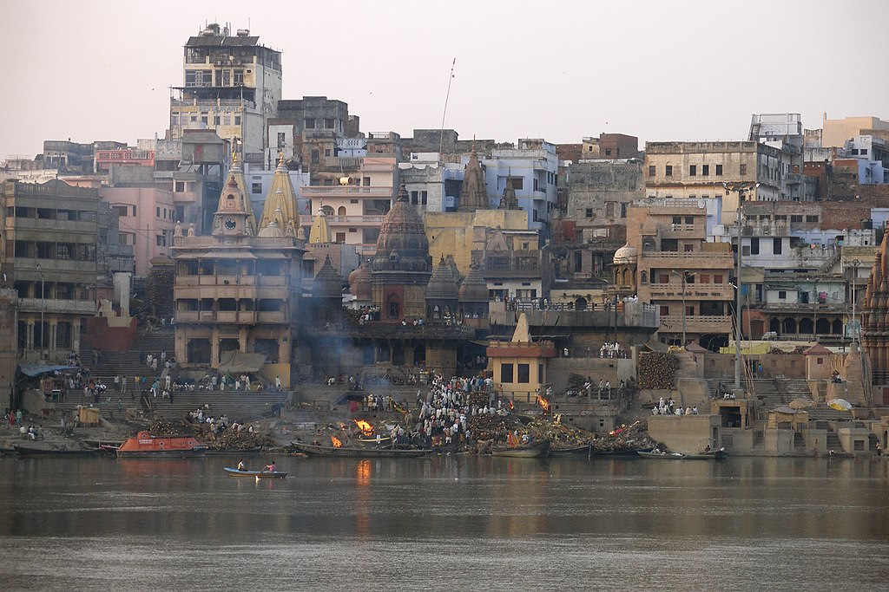

Best Places to Visit in India
India is an enormous and diverse destination. Bordered by
China,
Nepal,
Bhutan,
Sri Lanka,
Bangladesh and
Myanmar, not to
mention the
Arabian Sea and
the
Bay of Bengal,
means that there are many different means that there are many different
sides to the country. More than 20 official languages, multiple religions
and a variety of cuisines exist within India’s borders. To truly
experience the breadth of Indian culture and history, travel is key. Head
to as many of these best places to visit in Indias as your itinerary
allows.
More than 20 official languages, multiple religions and a variety of
cuisines exist within India’s borders. To truly experience the breadth of
Indian culture and history, travel is key. Head to as many of these best
places to visit in Indias as your itinerary allows.

The Pink City of Jaipur is the capital of Rajasthan and one of India’s
most alluring destinations. The city’s palaces, forts, and markets make
it a favorite among travelers. The main attraction is the City Palace,
which is a blend of Rajasthani and Mughal architecture. The palace is
still home to the last ruling royal family, who live in a private
section of the palace. The Jantar Mantar Observatory is another
must-see in Jaipur. The UNESCO World Heritage site is home to 19
architectural astronomical instruments, which were built by the Rajput
king Sawai Jai Singh, who founded Jaipur in 1727.

Mysore is a city in the southern part of the state of Karnataka, India. Mysore is located at the base of the
Chamundi Hills about 145.2 km (90 mi) towards the southwest of Bangalore and spread across an area of 152 km2 (59 sq mi).
Mysore City Corporation is responsible for the civic administration of the city, which is also the headquarters of the
Mysore district and the Mysore division.
\

In the northern province of Punjab is Amritsar, a holy city
and a mecca for the Sikh religion. The main attraction in Amritsar is the Golden
Temple, also known as the Harmandir Sahib. Built more tha
n 400 years ago, this temple truly is golden, and it is always
packed with Sikhs visiting from around India and the rest of the world.

Varanasi is one of the world’s oldest continually inhabited cities and is dripping in history and spirituality.
Sitting on the banks of the River Ganges, the city is a place where devout Hindus come to wash away their sins in the holy waters.
The city is also known for its burning ghats, where cremations are held. The main ghat, Dashashwamedh Ghat, is a must-visit,
especially at sunrise or sunset.

Udaipur is often called the Venice of the East, and it is easy to see why. The city is built around a series of
artificial lakes and is known for its lavish royal residences. The most famous of these is the Lake Palace, which sits in the middle of
Lake Pichola. The palace is now a luxury hotel, but you can visit it even if you are not staying there. The City Palace is another
must-see in Udaipur. The palace is a blend of Rajasthani and Mughal architecture and is home to a museum with an impressive collection of artifacts.